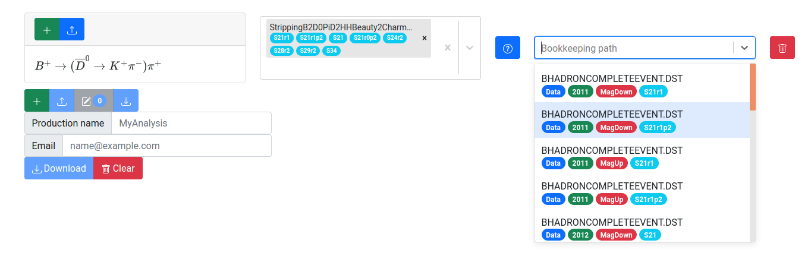

Choosing a dataset to process
After a stripping line has been selected, the final drop down menu on the main page labeled “Bookkeeping path” becomes available for selections to be made. This will specify which dataset(s) are to be processed from the internal LHCb bookkeeping system.

The datasets are catagorized by running year, magnet polarity, and the version number of the corresponding stripping campaign, all rendered as capsule shaped badges on the Bookkeeping path menu items. To process all available data for a specific running year, be sure to choose both the “MagUp” and “MagDown” samples. Note that the name of the menu items correspond to the name of the data stream in the LHCb bookkeeping system.
What if there are more than 2 options for a particular running year?
If the same stripping line was generated during multiple stripping campaigns corersponding to a given year of data taking, options corresponding to each stripping version will be rendered in the dataset selection drop down menu. Only one dataset should be chosen for each magnet polarity during a given running year. In cases where there are multiple options, it is recommended to choose the option corresponding to the latest stripping version. Details about stripping version names can be found here.